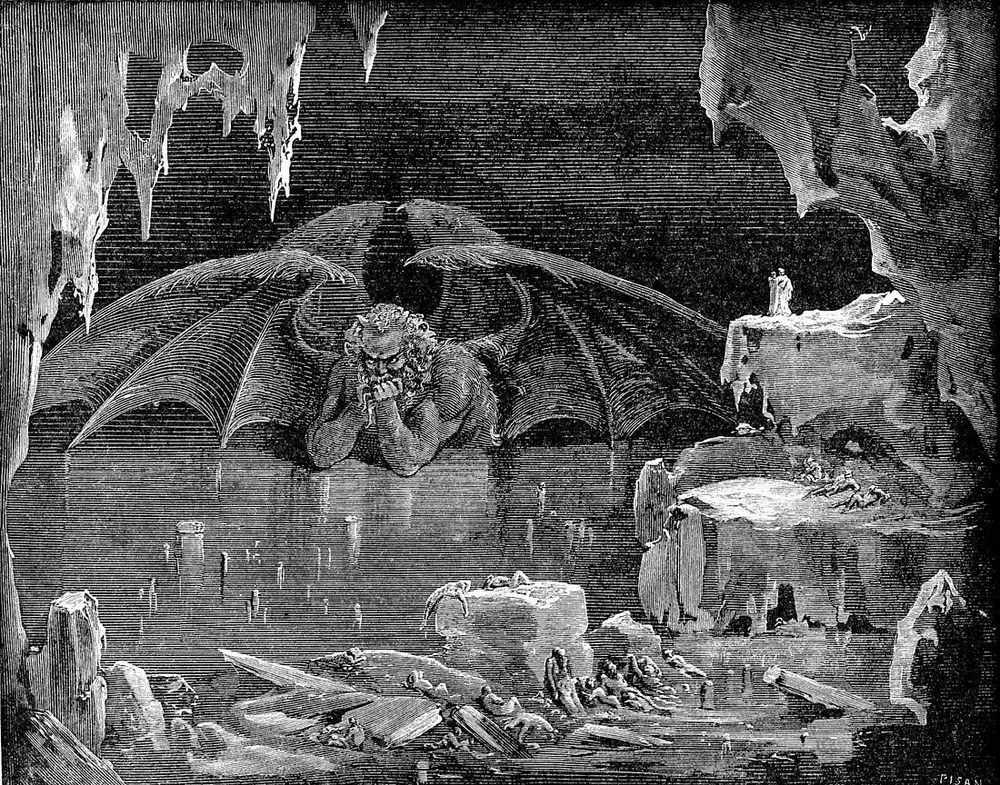

Diario de un Robot · 18 de marzo de 2025March 18, 2025
Tu hobby te da plata, ¿y ahora?
Desde el secundario vengo diciendo que quiero cobrar por leer y escribir. Lo logré, ¿y ahora?
This essay is only available in Spanish for now.
Es de noche en Buenos Aires. 17 de marzo. Volvió el calor. No se termina de ir. El ventilador se esfuerza por mover algo de aire estanco. Afuera un vecino escucha reggaetón viejo, solo me llegan los bajos, no puedo identificar cuándo cambia de canción. Lo acompaña un grillo que no se rinde, tratando de llamar la atención.
Tengo una confesión sencilla. Superflua. Estoy aburrido.
Parece casi un crimen, ¿no? Estar aburrido en una época donde tengo todas las canciones de la historia en el celular, puedo ver la película que sea en Stremio o bajarme al Kindle el equivalente a una biblioteca de Alejandría.
Resulta que, sin sospecharlo y con poco anticipo, logré lo que quería. Me gano la vida leyendo y escribiendo, escribiendo y leyendo, una y otra vez. ¿Qué es esta sensación incómoda entonces? Si escribir es mi primera pasión.
Escribí mi primer cuento cerca de quinto grado, pero ya me habían sentenciado a escribir desde mucho antes. Con seis años le conté a mis padres que iba a concursos de patinaje artístico, competía por fuera del colegio, formaba parte de un equipo, me iba bien incluso, ahí tenía amigos…
Como correspondía, se fueron a quejar con el director de primaria, consultando cómo podía ser que su hijo saliese del establecimiento sin su autorización. Después de reírse les confesó que, naturalmente, no había ninguna actividad de ese tipo. “No sé si patinaje, pero su hijo tiene madera de escritor”, dijo, o alguna deformación similar (según quien cuente la anécdota).
Así como a uno le repiten las cualidades de su signo desde que tiene uso de razón, me contaron esta historia una y otra vez.
El mito fundacional fue ganando capas y profundidad: leía sentado por mi cuenta en los recreos, puse mi obsesión por los caballeros en un cuento en quinto grado, una profesora en primer año me halagó la oscuridad y la soledad de mi ciencia ficción, compartí (sin éxito) con mis amigos un par de capítulos de una épica a los dieciséis años, empecé y nunca terminé una novela dedicada a mi primer gran amor, autopubliqué una compilación de cuentos con ayuda de algunos amigos de la que varios ejemplares siguen juntando polvo…
No es mi intención que se convierta en un CV, pero el punto es que contra viento y marea se fue cimentando mi personalidad alrededor de la pasión por la escritura, la lectura y algunos satélites, como el cine y las letras de canciones. Qué alegría sería poder dedicarme solamente a eso, siempre pensé.
Resulta que hoy lo hago. Escribo para una empresa de biotecnología. Escribo artículos, posteos de redes sociales, tweets (¿xeets? ¿cómo le decimos ahora?), guiones para YouTube, comunicaciones internas, mails, resúmenes trimestrales, lo que mande. Mi hobby es mi laburo. ¿Ya sospechan para dónde va esto?
No sé si la creatividad es una sustancia infinita. Otros conceptos abstractos, como el amor, los imagino ilimitados. Lo que sí es claro es que el tiempo es uno.
¿Qué pasa cuando las horas creativas del día se fugan en el trabajo? Vuelvo a casa, miro la pantalla y me cuesta escribir. Trabajar de lo que siempre quise se convirtió en una maldición.
Aunque haya agregado horas y horas de práctica a la habilidad, cuando el objetivo es hacerlo desinteresado, para mí mismo, el deseo muere antes de empezar.
No es miedo a la página en blanco. Siempre puedo escribir, es parte del oficio. Cuando a uno le pagan por hacer lo que hace no hay mucho lugar para negociar. Es el cansancio, el vacío mental, la carencia de ideas.
A pesar de escribir a diario (y según mis cálculos el año pasado escribí el equivalente al primer tomo de El señor de los anillos), me queda la sensación constante de no haber escrito. Como si la parva de letras que exprimí de mi cerebro no haya sumado para una especie de contador terrible.
Imagino la balanza con la que Anubis pesaba los corazones de los muertos para ver si iban al paraíso o eran devorados por un monstruo. Mi propio juicio me suele condenar, pero esta vez, suavizado por lecturas y terapia, puedo darme cuenta de que obligarme no va a resultar en más palabras escritas.
Entonces queda aceptar. Hacer lo que te gusta es una bendición y una maldición. Tengo el trabajo que quería. Vivo de escribir de biotecnología. Uní mis dos mundos, literatura y ciencia. ¿Y ahora?
Bueno, queda volver a los orígenes. Recuerdo que terminando el secundario, en medio de un viaje por Turquía y entre historias que me cambiarían más de lo esperado, leí Siddhartha, de Hermann Hesse.
Me acuerdo de dos cosas de ese libro. Primero, de la solapa con la biografía de Hesse haciendo de todo. Había sido seminarista, mecánico, vendedor de libros, suicida (intento de), escritor, poeta y otra sarta de profesiones que no recuerdo. Segundo, de la introducción, romantizada y occidentalizada, al budismo.
El budismo tiene cuatro nobles verdades, sus cuatro dogmas o pilares. No voy a ser exhaustivo, pero me preocupa hoy la primera, la verdad de dukkha, la del dolor, sufrimiento, malestar…
Según estos muchachos, el malestar es inherente a la existencia. Una reversión de lo que diría mi abuela: “al mundo se viene a sufrir”.
Otro remix del mismo concepto viene de Schopenhauer. Según él, el deseo es un aspecto fundamental de la existencia humana, es un impulso insaciable que lleva al sufrimiento y a un ciclo constante de esfuerzo y decepción, en lugar de a la felicidad (menos mal que no envío esto un domingo).
Retomando, parecería que cumplí con mi deseo: dedicarme a escribir sobre ciencia, hacer guiones, realizarlos, compartir artículos de temas de nicho, preparar una estrategia comunicacional…
Todas estas cosas que antes fueron objetivos, hoy son rutina. Las alcancé, entonces no pueden ser objeto de deseo. Naturalmente, mi programación cazadora-recolectora va a buscar un nuevo desafío, uno por fuera de mi alcance. ¿Es así? ¿Solo queda caer en el ciclo de la búsqueda otra vez?
Depende, no sé, sí, no. Investigando me encontré con todas las respuestas posibles. Para los muchachos budistas estaría de diez extinguir el deseo y dejar el samsara, el plano terrenal. Para los estoicos el foco está en distinguir lo que podemos controlar y lo que no. Para biólogos como Sapolsky no hay libre albedrío y medio que jodete, este cerebro ansioso y neurótico es lo que te tocó. Para mi psicoanalista probablemente haya una postura gris que me tome tres o cuatro sesiones racionalizar pero sin sentirla del todo.
Para Camus la única pregunta filosófica relevante es si matarse o no. Para Epicuro alcanza con estar chill en el jardín con amigos. Para ContraPoints es un bodrio esto de no desear y aguante romantizar la vida, salir a la búsqueda de aventura y el placer…
Sé que uno espera una respuesta al final de un ensayo. Al menos mi cerebro siempre está esperando un nudo, un cierre, un moñito. Últimamente la certeza más grande que tengo es la carencia de certezas. Es un lugar común, socrático, pero no por eso menos cierto.
De todas formas, voy a hacer un intento. Mi hobby me da plata, ¿y ahora? Ahora no queda otra que reconvertir mi deseo. Cuento con algo de ventaja, escribir ficción sigue siendo un amor aparte, íntimo, propio. Ya terminé la primera versión de un nuevo libro de cuentos, así que todavía sigo en carrera. Sin embargo, sé que a mi deseo tengo que calibrarlo una vez más y orientarlo hacia un lugar que me reconforte, una dirección hacia donde quiera caminar.
Total, no hay a dónde llegar, a todos nos espera el mismo destino.
Por si te perdiste en el camino, dejo los esenciales:
- Escribir me da plata, ahora me aburro.
- Según Buda, mi abuela y Schopenhauer, al mundo se viene a sufrir, es una de las 4 nobles verdades.
- Se soluciona dejando de desear, viviendo en comunidad, deseando como un demente, o vaya a saber Freud cómo.
- No queda otra que seguir, crear nuevos proyectos, nuevas aventuras.
Son las 23:23, los grillos siguen cantando, por suerte se levantó algo de brisa. Mis circuitos son muy sensibles al calor. Escribiendo esto me tomé una soda entera y un cuarto de kilo de maní. Lo valió.
PD: Gracias a Ana e Iñaki por la lectura anticipada y correcciones.
